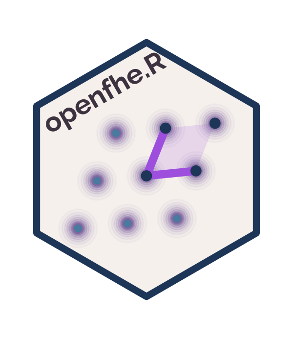

Comparison, minimum and maximum through scheme switching
Source:R/scheme-switching.R
eval_scheme_switching_setup.RdWith switching set up in both directions, a comparison is done by
switching CKKS values to FHEW, evaluating the sign there, and
switching the result back (CKKS with real data and
Feature$SCHEMESWITCH).
Usage
eval_scheme_switching_setup(cc, schswchparams)
eval_scheme_switching_key_gen(cc, key_pair, lwesk)
eval_compare_switch_precompute(cc, p_lwe = 0L, scale_sign = 1, unit = FALSE)
eval_compare_scheme_switching(
ct1,
ct2,
num_ctxts = 0L,
num_slots = 0L,
p_lwe = 0L,
scale_sign = 1,
unit = FALSE
)
eval_min_scheme_switching(
ct,
public_key,
num_values = 0L,
num_slots = 0L,
p_lwe = 0L,
scale_sign = 1
)
eval_min_scheme_switching_alt(
ct,
public_key,
num_values = 0L,
num_slots = 0L,
p_lwe = 0L,
scale_sign = 1
)
eval_max_scheme_switching(
ct,
public_key,
num_values = 0L,
num_slots = 0L,
p_lwe = 0L,
scale_sign = 1
)
eval_max_scheme_switching_alt(
ct,
public_key,
num_values = 0L,
num_slots = 0L,
p_lwe = 0L,
scale_sign = 1
)Arguments
- cc
A CKKS
CryptoContext.- schswchparams
A SchSwchParams object. The setup fills its CKKS fields from
cc.- key_pair
The
KeyPairof the CKKS context.- lwesk
The
LWEPrivateKeyof the FHEW context.- p_lwe
Integer; the FHEW plaintext modulus,
0L(default) for the library's choice.- scale_sign
Numeric; the scale applied before the sign is taken. Default
1.- unit
Logical; whether the input messages are normalized to the unit circle. Default
FALSE.- ct1, ct2, ct
Ciphertextobjects.- num_ctxts
Integer; number of values to compare,
0L(default) for all.- num_slots
Integer; number of CKKS slots,
0L(default) for the library's choice.- public_key
The
PublicKeyof the CKKS context.- num_values
Integer; number of values to take the minimum or maximum of,
0L(default) for all.
Value
eval_scheme_switching_setup(): an LWEPrivateKey.
eval_compare_scheme_switching(): a Ciphertext. The minimum
and maximum functions: a list of two Ciphertext objects, the
value and its index. The others: cc, invisibly.
Details
eval_scheme_switching_setup() creates the FHEW context inside cc
and returns its secret key; eval_scheme_switching_key_gen()
generates the keys for both directions.
eval_compare_switch_precompute() fixes the FHEW plaintext modulus
and the scale of the comparison.
eval_compare_scheme_switching() returns a ciphertext whose slots
hold 1 where ct1 < ct2 and 0 elsewhere.
eval_min_scheme_switching() and eval_max_scheme_switching()
return the minimum or maximum of the first num_values slots (a
power of two) and its index; set up the context with
set_compute_argmin(params, TRUE) for them. The index is one-hot
encoded over num_values slots unless the parameters say
otherwise (set_one_hot_encoding()). The slots after the first of
the value, and after the index, hold no meaningful data. The _alt
forms use more FHEW operations, for higher precision at a higher
cost (set_use_alt_argmin(params, TRUE)).